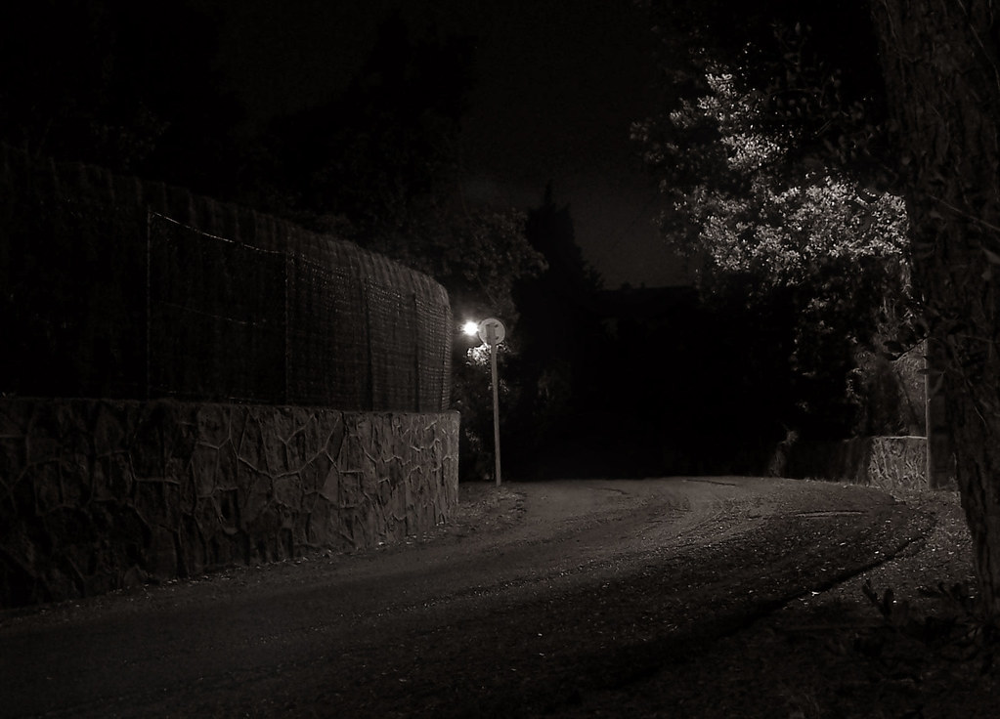

You wake up and find yourself on dark road. You have no idea how you got there and you have a horrible headache. There is single street lamp hovering above, illuminating a small patch of the road in front of you. You walk ahead and see a forked road. You squint to see where the right path leads but can't make out anything. You manage to make out the dark sillouet of a house on the left path.

Which path do you chose.